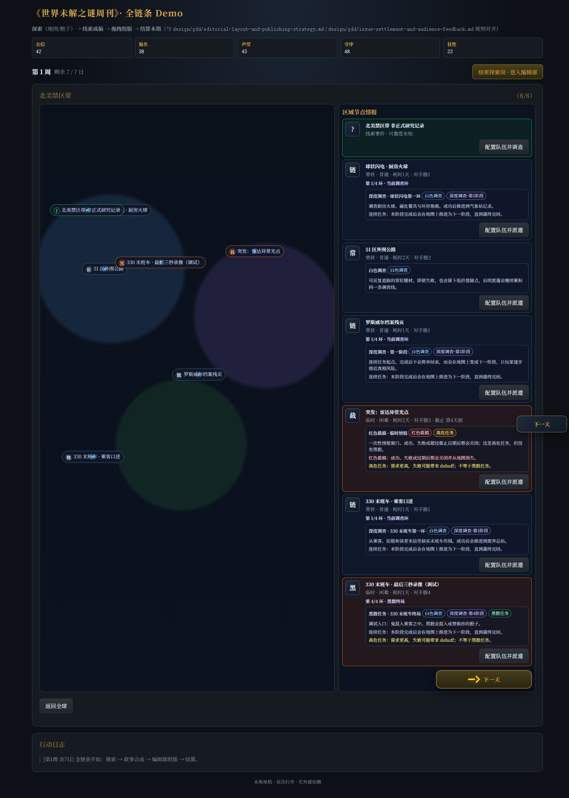
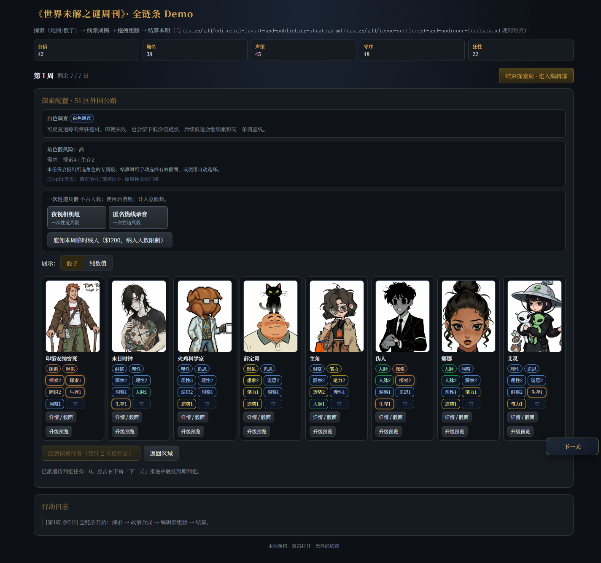
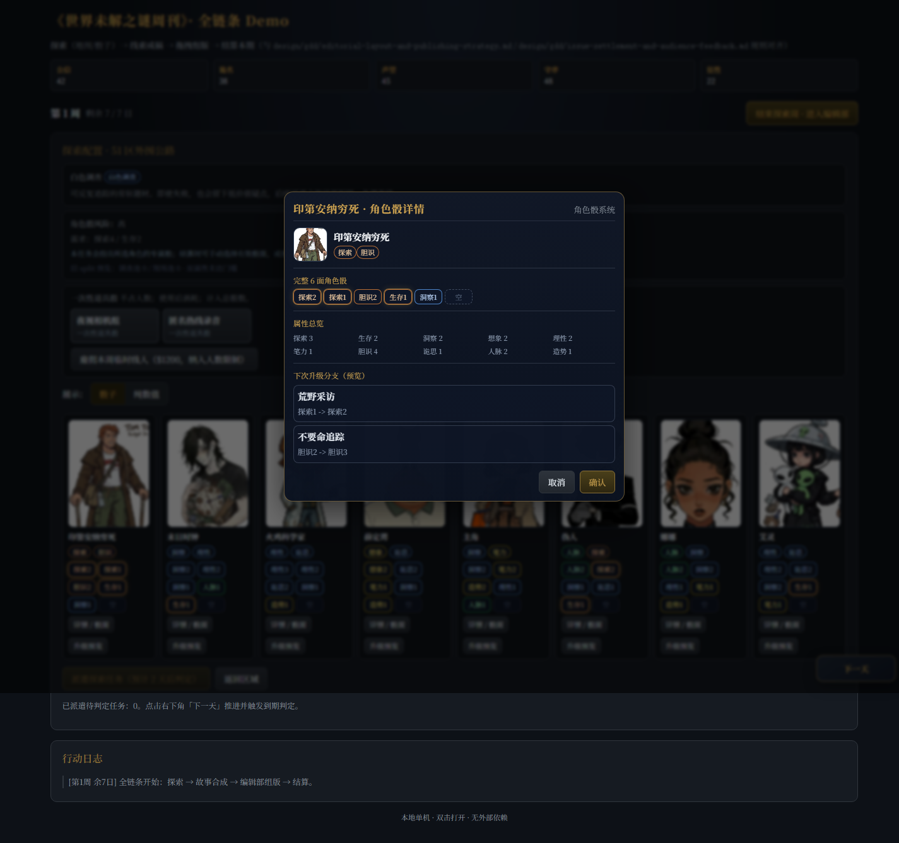
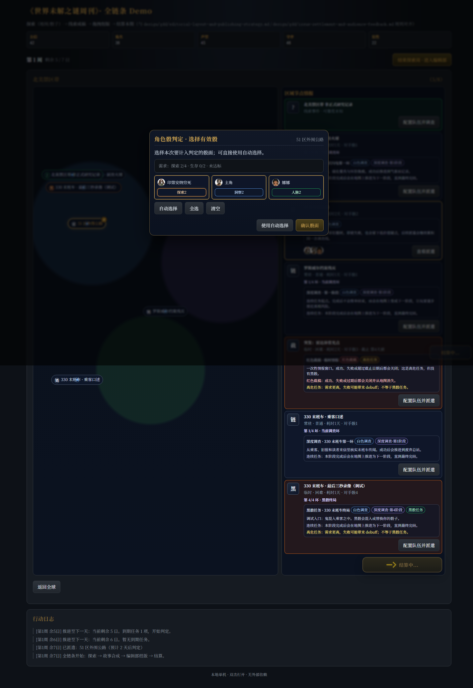
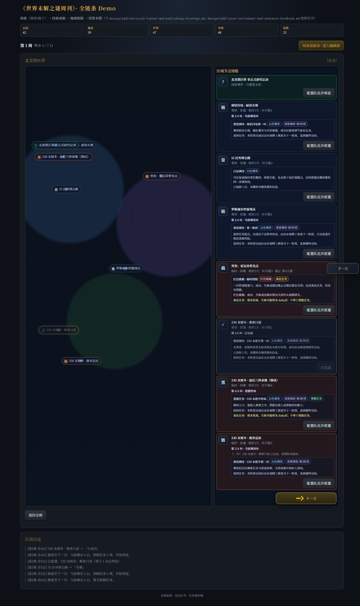
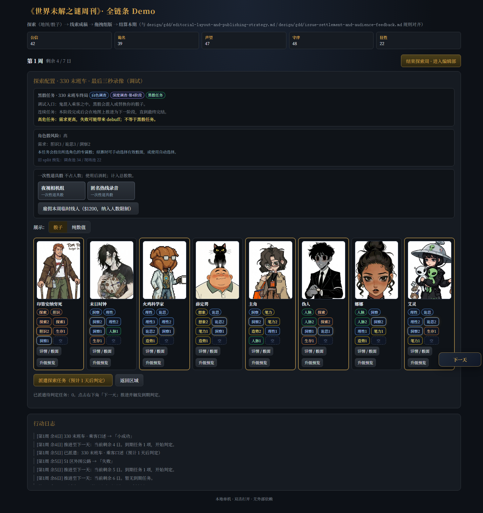

角色骰系统落地截图说明
本页汇总 2026-05-06 角色骰系统分批落地后的真实浏览器截图。截图覆盖：角色骰数据与详情、普通任务角色骰选骰、一次性道具骰、深度调查链灰化环、330 黑骰任务配置入口。
角色骰系统
普通达标判定
深度调查链 UI
黑骰任务入口





未完全覆盖：黑骰结算后的选骰/四档结果截图，当前自动截图脚本在推进终局结算时不稳定。代码已接入黑骰接口与主题机制，后续可单独补一张黑骰结算动效截图。